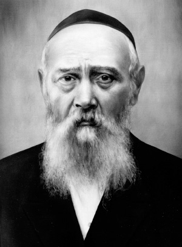

The Matrix of Opposites
When Sergei came out of the meeting he called over a few people and told them that they have to organize an “army” that he—Sergei—would lead personally, to bring about the appointment of Rabbi Levi Yitzchok as the Rav. “Atzmus defies all description—negation of the finite and negation of the infinite.” —Shaarei Geula Vol. 2 p. 119
By Prof. Shimon Silman, RYAL Institute and Touro College

It is significant that the Rebbe Melech HaMoshiach himself spoke of his life source from Atzmus on the eve of Rosh HaShana, 5752, the Rosh HaShana before the first stroke. He said, “Regarding Moshiach—in addition to the revelation of the name of Moshiach … we also have the Atzmus of Moshiach Tzidkeinu which is unified with the infinite Atzmus.”
A life which comes from Atzmus is above all definitions and limitations of natural life and death as we know it. As the Rebbe Rashab (fifth Rebbe of Chabad) says, “Relative to Atzmus, life and death are equal,” explaining that T’chiyas HaMeisim comes from Atzmus. (Seifer HaMaamarim 5670 – Eter, p. 100)
This applies to the Geula in general, as well, as the Rebbe MH”M writes: “The main revelation that will take place in the future Geula is the revelation of the infinite Atzmus which is higher than comprehension.” (Seifer HaMaamarim Meluket Vol. 3, p. 109)
Thus we see that the main characteristics of Moshiach and of the Geula involve the unifications of opposites, made possible by the revelation of Atzmus, because relative to Atzmus all opposites are equal. (For more on all this, including references, see my book Scientific Thought in Messianic Times, Chap. I, sec. 4-6 and Chap. V, sec. 2b)
The bottom line of the Geula is that this world will be a residence for the Atzmus.
THE POWER OF THE FATHER
This Shabbos, 20 Menachem Av, will be the Yom Hilula (yahrtzait) of Rabbi Levi Yitzchok Schneersohn, the father of the Rebbe Melech HaMoshiach. We will be entering the 70th year since his passing. Recently, the memoirs of his wife, Rebbetzin Chana, have been published and in them we find many stories of Rabbi Levi Yitzchok. The most powerful aspect of many of these stories is Rabbi Levi Yitzchok’s amazing ability to turn his enemies into supporters, even into loyal friends.
In fact, Rebbetzin Chana sums up Rabbi Levi Yitzchok’s biography by saying that because he was so uncompromising he made a lot of enemies. But he always succeeded in turning his enemies into friends.
After reading each of these stories, I would say, “Wow! How did he do that?” Before attempting to analyze it any further let’s consider two of these stories.
When Rabbi Levi Yitzchok’s candidacy for Rav of Yekaterinoslav was announced the local Zionists were furious because the Rebbe Rashab had just published a scathing letter opposing Zionism. The local Zionists called a meeting and decided that there was no way that they would allow a Chassid of the Lubavitcher Rebbe to be a Rav in their city.
One of their prominent members, Sergei Pauli, who was also an outstanding engineer, decided that he wanted to meet the young Rabbi himself. So he arranged a meeting with Rabbi Levi Yitzchok, some prominent community members and himself. After a cordial meeting that lasted until 9:00 p.m. he met privately with Rabbi Levi Yitzchok until 4:00 a.m.
When Sergei came out of the meeting he called over a few people and told them that they have to organize an “army” that he—Sergei—would lead personally, to bring about the appointment of Rabbi Levi Yitzchok as the Rav. He said that this mission must be accomplished at all costs!
Rebbetzin Chana describes a scene where Sergei would sit on a bench in the park with elder Chassidim with white beards gathered around him and he would instruct them and coach them on how to proceed on all matters of the election. Even after Rabbi Levi Yitzchok’s appointment, Sergei continued to take charge of the defense of Rabbi Levi Yitzchok against any challenges that came up.
Wow! How did Rabbi Levi Yitzchok do that?!
Then there is the story of the Matza bakery. In 1939 the communist government was at the height of its war against Judaism. That year the wheat harvest was very poor. Bread was scarce. In spite of this, Rabbi Levi Yitzchok somehow succeeded in taking over an entire government bakery and transforming it into a Matza bakery completely under his authority and supervision. They produced a large quantity of Matza which was distributed throughout Ukraine, to other parts of the Soviet Union and even to Poland.
And how did he do that?! In fact he was asked this very question by his interrogators after he was arrested.
In the Gemara there is a famous expression describing a son who became greater than his father: “Yafeh ko’ach haben miko’ach ha’av,” which means “the power of the son is superior to the power of the father.” Chassidus explains this (as it does everything) on a deeper level. It focuses on the word miko’ach which literally means “from the power.” It explains the phrase as follows: The superiority of the power of the son comes from the power of the father, meaning that the son’s power actually derives from a deeper level of the power of the father, a power that may not have been actualized by the father but is nevertheless deep within him.
One must wonder if Rabbi Levi Yitzchok’s ability to transform something into its opposite (a sort of unification of opposites) derives from a hidden power which later became revealed and expressed in the life of his son, the Rebbe MH”M. Certainly the transformation of something into its opposite requires a level higher than both of the opposing entities just as T’chiyas HaMeisim, transforming a dead person into a living person requires the revelation of Atzmus relative to which life and death are equal.
A SPIRITUAL SHLICHUS
In the sicha of 20 Menachem Av, 5751 the Rebbe MH”M said that everyone should take upon himself a shlichus in the spirit of Rabbi Levi Yitzchok (shlichus b’rucho). I would like to suggest that this may involve a unification of opposites—a unification of opposing forces, the transformation of negativity into the positive, or the unification of the physical and the spiritual and the refinement of the physical to make it a receptacle for the spiritual, or the unification of two Jews to bring peace and love between a man and his friend and between a husband and wife etc.
Our research group, the Rabbi Yisroel Aryeh Leib Research Institute on Moshiach and the Sciences, named for Rabbi Levi Yitzchok’s youngest son, has the mission of identifying Messianic phenomena in the physical world. A vast area of this research is the Swords into Plowshares phenomena (See Scientific Thought, Chapter III). We are also looking for deep discoveries in science (in scientific theories or in experiments) that may show the revelation of Atzmus in the world. (Scientific Thought, Chap. VI, sec. 1b-c)
(In fact the Rebbe MH”M explains that the entire natural order actually involves the combination of the finite and the infinite because while the laws of nature come form a finite revelation from G-d, the constancy and stability of the system of nature—the fact that the system keeps running without losing its energy—must come from an infinite revelation from G-d. See Seifer Maamarim Meluket Vol. 4 p. 228)
A dramatic example of such an experiment was done at the National Institute of Standards and Technology (NIST) in Boulder, Colorado. A team of physicists has succeeded in getting an entire atom to be located simultaneously in two different places. This is called “superposition.” (While this is known to “happen” in the murky subatomic world of quantum mechanics, this is the first time it was made to happen on a scale close to the real world.)
As the NIST describes it, “imagine a marble in a large, shallow, round-bottomed bowl. In the superposition state, the marble can be simultaneously at opposite sides of the bowl, rolling from side to side and through itself at the center…This situation defies our sense of reality.”
Is the ability to do this due to a Messianic revelation of Atzmus in the world? Possibly. Not every combination of opposites is due to a revelation of Atzmus, but, generally speaking, to have something and its opposite in a contradictory manner requires a revelation of Atzmus…
To comment on this article email [email protected]
Prof. Shimon Silman. "The Matrix of Opposites." Beis Moshiach, no. 889 (July 25, 2013).